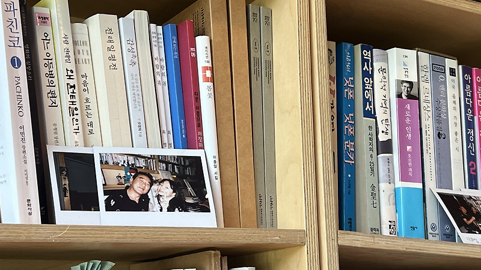

매거진 삼삼오오 · 연재
대구 시네마테크 운동 밑그림 그리기: 김중기와의 대화

대구 시네마테크 운동 밑그림 그리기: 김중기와의 대화
대구영화발굴단
(류승원, 금동현, 김주리, 이라진)
1990년대 대구 시네마테크 운동이 젊은 영화광들의 열정만으로 이루어진 것은 아니다. 90년대 영화운동에서 밑천이 논의가 되는 경우는 거의 없지만, 밑천 없이 무언가를 만들고 지속한다는 건 낭만적인 말이다. 오늘날 독립영화 진영에서 밑천을 대는 주체가 대부분 국가의 지원이지만 90년대에는 후원자의 기부가 상당한 비중을 차지하고 있었다.
김중기는 현재 기자생활을 그만두고 대안영화상영공간 '필름통'(대구 중구 달구벌대로405길 38)을 창설하여 운영하고 있다. 1990년대 기자 시절 김중기는 열성적으로 대구의 영화운동에 관심을 가졌으며, 때로는 [햇살]과 [영화언덕]과 같은 대학영화동아리 운동을 지원하는 후원자를 자처하기도 했다. 다만 여기서 말하는 영화운동의 주체는 창작자라기보다 관객이었다. 김중기는 영화를 상영하고 그에 대해 말과 글로 대화를 나누는 당시의 젊은 영화광의 열정에 감화되어 본인의 사비—때로는 다른 기관들을 끌어와—그들에게 금전적인 지원을 했다. 참여부터 지원까지, 김중기의 1990년대는 당대 대구의 젊은 영화광들을 결속하여 그들의 활동을 지속하고 확장하는데 중요한 역할을 했다.
이하의 인터뷰는 2024년 7월 30일, 류승원 영화감독이 김중기 기자를 만나 2시간 남짓 나눈 대화의 요약본이다. 대화중에 김중기 기자는 그의 생애, ‘필름통’이라는 공간, 90년대 대구 영화광들과의 교류와 관련한 내용을 들려주었다. 인터뷰 중간 궁금증을 참지 못하고 질문을 던졌던 금동현 영화사연구자의 발언도 함께 실었다.
최소한의 편집을 거친 대화의 전문도 함께 첨부해두었다.
1. 김중기의 영화사랑
류승원(이하 류): 김중기 기자님 안녕하십니까? 저희는 [대구영화발굴단]이라는 단체입니다. 본격적인 시작에 앞서 기자님의 생애와 관련된 질문을 먼저 드립니다. 기자님께서는 원래 고향이 대구였나요? 혹시 아니라면 언제, 또 왜 대구에 오시게 됐는지 궁금합니다.
김중기(이하 김): 저는 청송에서 태어났습니다. 저는 61년생이고 68년도 초등학교 2학년 때 대구로 왔는데요. 여기 대신동에서 살았어요. 제가 근처(대신동)에 필름통을 만든 이유도 어린 시절에 여기서 놀았던 추억 때문에 만들게 됐었죠. 제가 영화에 대해서 인연이 맺게 된 거는, 청소년 시절 시골에 가설극장이라는 게 있었어요. 극장이 없을 때 마치 가설 극단처럼 천막 쳐놓고 영사기를 들고 다니면서 영화를 상영했던 공터나 학교. 이런 곳에서 했던 가설극장이라는 것이 있었는데 제가 어릴 때 누나 등에 업혀서 영화를 보러 갔어요. 그때는 영화가 뭔지도 모르고 갔었는데 큰 광목천에 움직이는 그림을 봤어요. 그게 너무나 저한테는 충격적이었어요.
나중에 크고 나서 그 영화가 뭔지를 제가 찾아봤어요. 찾아봤더니만 임권택 감독의 데뷔작이었어요. 1962년도에 나온 〈두만강아 잘 있거라〉라는 흑백 영화였는데 그 흑백 영화에서 총 쏘고, 말 타고 이런 장면들을 본 것이 처음이었고. 나중에 누나한테 물어봤어요. 나를 업고 갔던 게 기억이 나서. 그때가 몇 살 때였나 물어보니까 제가 3살 때였어요. 62년도에 극장에 개봉하고, 그 필름이 돌아서 몇 년 후에 청송에 있는 그 가설극장에 걸렸고, 제가 누나 등에 업혀 가지고 본 것이 아마 한 64년 정도 됐지 않을까… 그래서 그 이후 이제 대구에 오니까 그때는 재개봉관, 개봉관… 동네마다 극장이 굉장히 많았었어요. 저는 서문시장 근처에 살았는데 시민극장, 오스카 극장, 사보이 극장, 칠성 극장. 막 이런 극장들에 가서 영화를 보는 것이 낙이었어요. 어릴 때부터 그 이후 줄곧 영화를 제 인생에 가장 좋아하는 것으로 만들었죠.”

류: 기자 생활은 어떻게 시작하게 되셨나요? 기자님의 기사들을 보니 영화에 관해 주로 쓴 것처럼 보이지만 다른 분야의 글들도 종종 보였습니다.
김중기(이하 김): 1990년 3월 5일 매일신문에 입사를 했어요. 입사를 한 이후 국제부나 여러 부서를 다녔지만 제가 다른 부서보다는 문화 쪽이-제가 영화를 그때도 굉장히 좋아했으니까-가장 제 적성에도 맞고 그래서 문화부에 굉장히 오래 있었죠. 문화부에 있으면서 미술, 연극, 출판, 종교. 여러 가지 장르들에 관해 제가 취재를 다녔는데 그중에 가장 좋아했던 게 영화였고. 처음 영화 관련 기사를 쓰기 시작한 게 92년도였는데요. 그 당시에는 신문에 영화 관련 기사들이 대부분 깊이보다는 추세. ‘요즘 이런 영화가 추세다!’ 이런 식으로 현상만 보도하던 시기였는데 제가 92년부터 영화 기사를 쓸 때 한 영화를 보고 굉장히 심층적으로, 나름 분석하면서 장점과 단점 이런 것들을 평을 쓰기 시작했어요.
금동현(이하 금): 92년도면 한국에서 영화가 되게 주류적인 문화까지… 그러니까 공식적인 문화까지는 아니었다고 생각이 들거든요. 특히 80년대 한국 영화는 ‘저질 영화’ 이런 식으로 평가도 받았고, 영화는 ‘딴따라가 하는 거다.’ 이런 이야기도 많이 들었던 걸로 아는데 깊이가 있는 평론을 쓰시기 시작하시면 프런트 같은 곳들에서 반응들이 어땠을지도 좀 궁금합니다.
김: 그때는 사람들이 그런 기사들을 굉장히 생소하게 여겼어요. ‘아니 이 귀한 지면에 왜 한 영화만 이렇게 쓰느냐?’ 이렇게 해서 데스크가 좀 못마땅해하기도 했어. 그럴 때는 또 여러 영화들 같이 묶어서 쓰기도 하고. 그렇지만 독자들이 원했던 것은 한 영화! 근데 그 영화가 상업 영화가 아닌 의미 있고 좋은 영화들. 그런 영화들을 깊이 있게 분석해 주기를 바라는 갈증을 제가 알게 되었죠.
80년대 한국영화는 굉장히 아쉬움이 많았어요. 저도 20대부터 영화를 보고 나면 늘 평을 썼어요. 그리고 10대 때도. 제가 당시 썼던 일기를 다 갖고 있거든요. 거기도 보면 ‘어느 극장에 가서 무슨 영화를 얼마 주고 봤는데, 주인공은 누구였고, 어떤 장면이 인상적이었다.’ 이런 식으로 나름대로 평을 많이 쓰고 그랬었는데, 이제 80년대에 되게 아쉬웠던 것은 많은 분들이 이야기하듯이 향토성 짙은 에로 영화들이 굉장히 많이 나와서 좋은 영화들이 그렇게 많이 사람들에게 안 알려졌죠. 여러분이 잘 아시는 그 당시 〈애마부인〉 시리즈부터 시작해서 그런 영화들이 되게 많았었어요.
90년대 또 영화에 대한 관심이 많았던 것은 이건 또 다른 해석일 수 있는데 VHS라는 매체 때문이었어요. 그전에 영화라는 것은 극장에 가거나, 아니면 TV, ‘KBS 명화극장’이나 ‘MBC 주말의 명화’에서 하는 영화 밖에 볼 수가 없었어요. 저는 특히 매주 영화를 보러 가는 것이… 일주일 학교 다닐 버스비 아껴 가지고 토요일 날 영화 보는 게 가장 큰 즐거움이었는데 그거 외에는 볼 수가 없으니까. 그때는 ‘AFKN’이라는 주한미군방송이 있었어요. 미군방송이 TV에 나오는데, 미군방송의 장점이 금요일 저녁 때 호러 영화들 같은 우리가 못 보던 영화를 거기서 많이 했어요. 그래서 ‘AFKN’ 영화도 보고 하는데 그거 가지고도 모자랐던 거야. 근데 VHS라는 비디오테이프가 나오기 시작하면서 좋은 영화들도 쏟아졌고, 우리가 그동안 알고만 있었던 영화들이 비디오로 출시되면서 그걸 막 찾아다니면서 영화를 봤어요. 그 비디오테이프가 소량 제작되다 보니까 일반 비디오 대여점은 없었어요. 그래서 영화마을 체인점이라든가. 이런데 막 찾아다니면서 영화를 예약하고 기다렸다가 보고. 그때 이제 영화를 단순히 소비하던 욕구에서 벗어나서 ‘좋은 영화를 갖고 싶다. 그리고 영화를 만들고 싶다.’라는. 그리고 외국의 좋은 영화들은 수입은 안 되더라도, 그 당시 불법 복제해서 시네마테크를 열고. 우리가 운동을 하면서 보게 됐던 것이 VHS라는 매체의 덕이 아니었나 그렇게 생각합니다.
2. ‘필름통’으로 꾸는 꿈
류: 과거에는 열린 공간Q나 자유극장같은 이제 대안 극장들이 여럿 있었잖아요. 지금은 거의 없어졌고. 현재 대구의 극장 환경에 대해서 좀 어떻게 생각하시는지, 대구의 관객들이 어떤 위치에 놓여 있다고 생각하시는지 궁금합니다.
김: 나는 극장 관람 문화 자체가 옛날 사람이라서 그런지 옛날이 훨씬 나았어. 스크린이 훨씬 컸고. 다만 사운드만 요즘 영화가 디지털 사운드다 보니까 그래서 그렇지 스크린 크기나 영화 보는 광경이 옛날 훨씬 좋았어요.
지금은 저도 매주 영화를 보러 가는데 요즘은 소극장 같은 느낌? 극장 좌석도 그렇고 거의 소극장 수준이죠. 그 소극장이 이제 80년대에 막 우후죽순으로 막 만들어졌을 때의 거의 그런 수준이다. 요즘 큰 사이즈의 아이맥스관도 있긴 있지만 저는 극장마다 특색이나 이런 건 다 없어졌다고 생각해요. 멀티플렉스다 보니까 이 배급 3사의 횡포가 정말 마음에 안 듭니다. 영화입장료도 코로나 때문에 수익이 줄어드니까 올리고. 직원들 다 잘랐잖아요. 지금 그런 식으로 하면서 영화 가격까지 올려 가지고 결국은 이제 작은 영화들 있잖아. 독립영화라든가, 저예산영화들이 설 자리를 잃게 만든 것도 극장 문화라고. 잘못된 것이지. 잘못됐는데 스크린… 예를 들면 범죄도시 같은 경우 전국에 모든 스크린 2100개 중에 그거 86%를 점유한다는 게 말이 됩니까? 그거는 아니죠. 그러니까 한꺼번에 뽑아 먹자고 극장들이 담합한 거예요. 그러다 보니까 의미 있는 영화들이 설 자리를 잃게 되고. 그 다음에 그게 재투자가 안 되니까 제작 환경까지도 지금 나빠지고. 이런 상황인 거죠.
금: 열린공간Q가 기자님께서 기자 생활을 하시고 생긴 거잖아요.
김: 그렇죠. 그게 96년도인가… 90년대 중반에 생겼어요. 중간에 생겼는데 이제 90년대 초에 제가 영화 기사를 쓰기 시작하면서 그때 영화에 대한 정보들이 많이 늘어났죠. 많이 늘어나면서 우리가 몰랐던 영화, 해외에서 수상했던 좋은 작품들, 그다음에 명감독들의 작품들. 이런 것들을 알게 되면서 자꾸 찾아보게 되잖아. 예전에는 단순히 극장에서 상영되는 영화를 가서 보는 데 그쳤는데 그때부터는 찾아보기 시작하게 되죠.
열린공간Q에서도 ‘어떤 영화를 한다. 일본 영화 어떤 영화를 한다.’ 그러면 그 영화를 이제 사람들이 알고 찾아갔고. 그다음에 열린공간Q의 역할이나 이런 부분들이 저는 기자를 떠나서 영화를 좋아하는 한 사람으로서 굉장히 소중하고 귀했기 때문에 ‘이거를 사람들한테 많이 알리자!’. 이렇게 해서 열린공간Q에서 하는 이런 모든 행사들은 신문에 다 게재를 했어요. 하나도 빠짐없이. 그때는 보통 영화, 극장 광고는 돈을 다 받아서 홍보를 하는데 열린공간Q는 돈 없이도 썼었죠. 당시 대표였던 김성익 선생을 얼마 전에 만났는데 그때 열린공간Q를 처음 시작하면서 도움을 많이 받았다고 인사를 하는데 그 자체가 소중했기 때문에 저도 기사를 썼죠. 그걸 필요로 하는 사람들도 주변에 많았기 때문에. 예전에 시네마서비스에 있었던 이하영씨 같은 경우는 국회에 가서 막 입법화하자고 하는 것이 결국 제작 환경을 좀 더 낫게 만들어서 대작 영화뿐만 아니라 저예산영화나 예술영화 같은 것들도 관객들이 좀 더 찾아볼 수 있고 선택할 수 있도록 만드는 게 그게 문화잖아요. 지금은 선택할 수 있는 상황이 아니라는 거죠.
류: 기자님의 ‘필름통’이라는 공간에 대해서도 소개해주시면 감사하겠습니다.
김: 최초의 생각은 이런 공간이 없어가지고. 당시에 시내에 있는 연극극장이 월요일에 문을 닫았어요. 월요일에 소극장이 문을 닫으니까 연극 소극장을 빌렸어요. 빌려서 사람들에게 ‘좋은 영화 보자. 극장문화가 계속 안 좋게 바뀌니까 우리라도 좋은 영화 찾아서 보자’ 하는 것이 1990년대 말쯤부터 시작했어요. 그때가 멀티플렉스가 생기기 시작했는데 그때부터 사람들하고 좋은 영화 찾아보기라는 그런 프로그램을 하다가 이제 공간을 만들어겠다 해서 공간을 만들었죠.

3. 대구 시네필들과의 교류
류: 90년대에 활동했던 대구의 시네필들과의 교류가 많았던 걸로 들었습니다.
그때 만난 사람들이 이제 계명대학교 [햇살]이었죠. 그런 친구들이 있었는데 그때가 90년대 초반이었어요. 이제 사람들이 스크랩도 하고 그럴 정도로 제가 대구의 ‘영화에 진심인 기자’라는 게 알려지고 팬레터도 오고 그러는 와중에 그 친구들한테서 연락이 왔던 거예요. 그래서 만나게 되면서 아직까진 학생이고 이러니까 돈도 없을 거 아니에요. 그래서 저는 월급을 받으니까 우리 학생들에게 해줄 수 있는 것들은 그 움직임을 기사화하는 것. 그리고 그때 맥주도 사주고… 지금도 그 친구들 만나면 이야기를 해. 그때 여기 625피자라고 중앙파출소 앞에 있던. 거기는 피자가 좀 비싸고 그때 감자튀김을 원 없이 먹었다 그러잖아. 감자튀김이 굉장히 싼 안주였고. 그때는 맥주 마시는 게 안주가 그렇게 중요한 시절은 아니었으니까. 늘 모여서 맥주 마시면서 이야기하고 활동들 하도록 이렇게 이제 기자로서 지원했죠. 그런 영화 운동이나 이런 것이 되게 중요하고, 나의 관심사이기도 하고, ‘누군가에게는 그런 걸 지원을 좀 해줬으면 좋겠다.’싶은데 당시 영화라는 것은 시청이나 공공기관에서 지원하던 그런 시대가 아니었기 때문에 그들의 열정과 뜨거운 영화 사랑을 알게 되면서 제가 지원을 했죠. 대구는 사실 기초 예술이 있지 않습니까? 음악, 미술. 이런 데는 굉장히 인정을 많이 하지만 영화는 낮은 취급을 하고. 대중문화에 대해서는 다른 지역보다 차별이 더 심했죠. 그래서 그들이 이렇게 활동하는 것이 그 당시로서는 어떤 지원이나 이런 것도 받기 어려운 열악한 상황에서 했는데 나중에 모여서 이야기를 하다 보니까 뭐 이것도 해주고, 저것도 해주고 그런 이야기를 많이 들었어요.
류: 그러면 당시 [햇살]이라든지, [영화언덕]이라든지. 이분들의 어떤 열정 자체에 좀 감화가 돼서 그냥 무상으로, 자신의 역량이 되는 선에서 도움을 주신 건가요?
김: 너무 이쁘지 않아요? 내가 정말 좋아하는 영화를 이렇게 어렵고 열악한 상황에서… 미친 거예요. 영화에 대해서 미쳐 가지고 막 그거를 돈도 없으면서. 그때 무슨 처음에는 [씨네힐]이었다가, 나중에 [영화언덕]으로 바뀌고, [제7예술]로 바뀌면서. 뭐 이렇게 바뀌었지만 어쨌든 그런 책자를 낸다는 거는 굉장히 의미 있는 작업이었지. 자기들이 알고 있는 단순한 영화에 대한 사랑을 뛰어넘어서 한 분야에 대해서 연구를 해서 글을 쓰고 그 글을 잡지로… 정말 누가 사겠어요? 단지 자신의 일들을 거기에 기록을 하고 그걸 남기려는 열정이 제가 봤을 때는 대단했죠. 그래서 누군가는 지원을 해야 되겠다 했어요.
류: 이진이 선생님께서 IMF 이후에 영남이공대 창업보육센터에서부터 [키노키즈]라는 웹진을 제작했다고 저희가 들었는데 그때 기자님께서 보증금 같은 금전적인 도움뿐만 아니라 컴퓨터 나 테이블 같은 집기도 제공을 해주셨다고 하더라고요. 사실 그 정도의 규모면 후원을 좀 넘어서는 개념인데 어떻게 가능하셨을까요?
김: 그때쯤이면 이제 그 친구들과 같이 알게 된 시간을 좀 많이 가졌을 때였죠. 그다음에 이 친구들이 뭔가를 하고 싶은… 단순한 애호가의 수준을 좀 넘어섰어. 넘어서 같이 토론하고, 영화도 볼 수 있는 공간이 되게 필요했는데 그때도 역시나 돈은 없었죠. 요즘처럼 아르바이트를 하거나 이런 것도 잘 없을 때였으니까. 대줄 수 있는 거는 저밖에 없었어요. 전부 다 동생 같고. 그래서 다 해주고 싶었어요. 그런 것들이나, 테이블, 컴퓨터, 뭐 이런 것들. 그렇게 제공을 필요로 해서 했죠.
류: 대단한 일을 하셨네요. 그 시절에는 대구영화인들이랑 많은 교류가 있으셨던 걸로 알고 있는데 요즘은 어떠세요? 요즘 활동하는 대구영화인들과도 교류가 있으신지.
김: 요즘은 그렇게 많지는 않습니다. 지난번처럼 여기 이제 대관해서 오는 사람들 정도고. 제가 깊숙이 그들을 예전처럼 지원하거나 그러지는 못하고 있는 상황인데… 여전히 대구에서 영화를 한다는 것이 어렵고 힘들다는 건 알아요. 아까도 이야기했듯이 대구 사람들의 인식이나. 근데 사실은 대구가 문화적으로 굉장히 깊이가 있는 도시거든요. 근대에서부터 시작해서 근대 현대미술도 대구가 메카였어요. 1970년대 되면 서울에 있는 화가들이 대구에 오면 한 코 죽고 들어갔어요. 그럴 정도로 대구는 문화적인 깊이가 굉장히 깊었는데 그게 이제 말하자면 고급문화랄까… 기초예술 쪽으로 지나치게 인정해 주고, 대중문화라든가 이런 거는 굉장히 낮게 보는 시선들이 있었지만… 그러다 보니까 오히려 눈 속에 핀 꽃이 더 아름답듯이 그런 열악한 환경에서 그들이 한 행동들이나 이런 것들은 훨씬 더 뜨거웠죠.

류: 제가 94년도에 영화언덕 잡지를 보니까 당시에 이제 영화언덕 측에서 ‘컬트 영화제’를 했었는데 당시 예술총회 사람들이 경찰에 찔러서 그게 무산이 됐다고 하더라고요. 그 당시에는 이제 기자님께서 지원해 주시고 친하게 지냈던 분들이 이제 한 편 있었고, 또 당시 기성세대였던 예총 사람들에 대한 기억은 어떻게 가지고 계신지도 궁금합니다.
김: 그때 영화인협회는 굉장히 폐쇄적이었어요. 폐쇄적이었고 영화인협회면 영화인이 해야 되잖아요. 근데 아니었어요. 회장이 아는 사람들 위주로 협회가 운영이 되고 저도 당시에 많은 기사를 썼지만 지원받는 사람이 주로 지인들. 관변단체잖아요. 저도 좀 적대적이었어요. 그들하고는 적대적이었던 게 아까 이야기했듯이 영화인도 아니면서 영화인처럼 굴면서 대구시로부터 돈 지원받아서 영화를 찍는데 3억, 4억 들이니까 이상한 영화를 찍는 거예요. 그때 서울에 다 지나가는 원로 배우들 대구 초청해서 무슨 맛집 기행하듯 막 돌아다니면 찍어놓은 거야. 무슨 영화라고 완성도도 떨어질뿐더러 그렇게 한쪽에서는 돈이 없어서 정말 하고 싶어도 못하는데 그런 사람들이 다 받아서 그렇게 하다 보니까. 그런 사람들 하고 약간은 적대관계가 형성이 되다 보니까. 이제 그때 ‘컬트 영화제’라든가 이런 것들이 어떻게 보면 정식 수입된 게 아니고 전부 다 어떻게 보면 불법이에요. 그러다 보니까 이제 예총 사람들이 봤을 때는 행사를 못하도록 했던 부분이 있지.
예전에는 예술가들이 ‘관변예술가’가 되는 것이 굉장히 수치스럽게 생각했어요. 옛날 어른들, 우리 이창동 감독의 형님이었던 아성 이필동 선생 같은 분들은 대구 연극계에 거두셨거든요. 그런 분들은 예전에 시청가면 시장실 문 막 차고 들어갈 정도였어요. 지금은 시장실에 문 박차고 들어갈 예술가가 어디 있어요? 당시 관변예술가들이 이제 관하고만 붙어서 하다 보니까 이 풍미나 지위들이 많이 떨어졌죠.
아까 배창호 감독이 대구에서 났다고 했잖아요. 물론 갓난아이 때 서울에 올라갔지만 이 지역이 가지고 있는 DNA라는 게 있잖아요. 이 환경! 이 환경에서 만들어진 게 80년대 배창호, 그 다음에 90년대부터 해서 2000년대 이창동, 그 다음에 봉준호도 대구 출신이지. 지금 한 30~40년 가장 빛나는 영화인들 하면은 대구 사람들이야. 어떤 사람은 봉준호 초등학교 때 올라갔는데 뭐 하지만 그 지역이 갖고 있는 그 힘. 그거는 증명이 안 될 뿐이지. 그 지역이 갖고 있는 힘은 굉장히 나는 크다고 봐. 큰 의미를 갖고 있는데. 거기다 우리 박남옥 감독 있잖아요. 박남옥 감독이 50년대에 아이 들쳐 업고, 스태프들 밥 먹여가면서. 언니가 그때 동아백과사전 알죠? 동아출판사 그 사모님이 박남옥 언니야. 부잣집이지. 그러니까 언니 돈으로 제작비 받아서 만든 게 자매 영화사예요. 자매 영화사 1호가 박남옥 감독의 영화죠. 그 양반 이 근처 살았어요. 내가 집도 찾아가 봤어. 박남옥 감독이 어렸을 때 살던 집도 내가 찾아가 봤어. 그러니까 이 양반이 경산 하양에 있다가, 금호로 이사 갔다가, 어릴 때 대구로 들어왔어.
류: 듣다가 궁금해진 게 있는데 대구라는 지역이 가지고 문화적 특성 같은 게 있을까요?
김: 그게… 대구가 지금 보수 도시가 됐잖아요. 보수성으로 바뀌었지만 예전에는 대구가 한국의 쿠바다 카고 뭐 그럴 정도로 야당세가 굉장히 강했잖아. 2·28 학생 운동이 왜 나오는데. 그게 전부 다 기질이에요. 그 반골 기질인데 예술에서도 그 기질이 그대로 남아 있어요. 예술에 가장 필요한 게 뭐예요? 독창성! 그다음에 진정성. 독창성을 가지려면 이게 자기들의 고집이나 이런게 엄청나야 되거든. 그게 대구 사람들이에요. 그리고 새로운 것에 대한 호기심이나 이런 것도 굉장히 많아요. 기존에 있었던 것도 있지만… 사진! 대구가 사진비엔날레 하잖아요. 그런 것들하고… 한국에 처음 피아노 들여온 것도 대구잖아. 뭐 이런 것들? 새로운 것에 대한 갈구가 대구가 굉장히 강해. 단순히 지금은 정치적으로만 보수성이 있다 그러지만 제 주변에 있는 반골 기질을 가진 대구 예술인들은 대단해요. 그렇기 때문에 대구가 힘이 있다고 나는 보거든. 영화 쪽도 나는 마찬가지라고 보고.
류: 기자님이 생각하시기에 지금 대구가 이렇게 약간 문화적으로 좀 지워져버린 이유는 그 시대 때 반골 기질이라든지… 기자님께서 말씀하신 그런 특성을 가진 사람들이 결국에는 성공을 하고… 이렇게 되면 이제 대구를 떠나게 되잖아요. 서울로 가게 되는데 그런 서울로의 이전이랄까. 그때 활동하던 분들의 서울로의 이전이 좀 큰 영향이 있다고 보시는지.
김: 그런 게 크죠. 예전에는 서울이 지금처럼 저렇게 거대하지 않은 그냥 지방 도시였어. 근대에 가장 문화적인 깊이가 있는 데가 평양과 대구였어. 그래서 전국의 교육청이 있잖아요. 교육청에 가면 전부 그때는 대구 출신들이 전부 다 교육청장하고 그랬어요. 또 당시 대구에서 고무공장하는 노동자들도 다 좋게 취급했지. 예술 또한 마찬가지고. 그래서 대구가 가진 문화적인 역량이나 이런 것들이 강하지만 아무래도 서울 집중화되고 그러다 보니까 서울로 사람들이 나가서 근거지가 되는 바람에 지역에서 활동하고 있는 전업 작가들이나 이런 사람들이 자꾸 좀 줄어들고 그런 영향이 있죠.